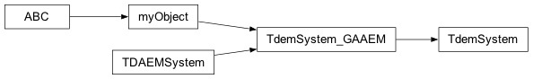

Time domain system

- class geobipy.src.classes.system.TdemSystem.TdemSystem(offTimes=None, transmitterLoop=None, receiverLoop=None, loopOffset=None, waveform=None, offTimeFilters=None, components=['z'], system_filename=None)
Initialize a Time domain system class
TdemSystem(systemFileName)
- Parameters:
systemFileName (str) – The system file to read from
- Returns:
out – A time domain system class
- Return type:
- property get_modellingTimes
Generates regularly log spaced times that covers both the waveform and measurment times.
- Parameters:
waveformTimes (array_like) – Times of the waveform change points
measurementTimes (array_like) – Measurement times for the system
- Returns:
out – Times spanning both the waveform and measrement times
- Return type:
array_like
- property off_time
Time windows.